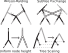
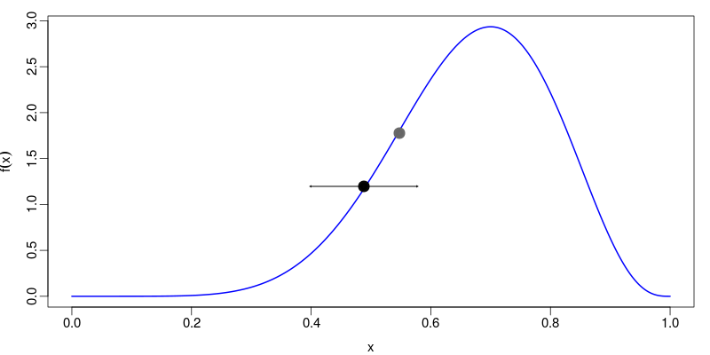
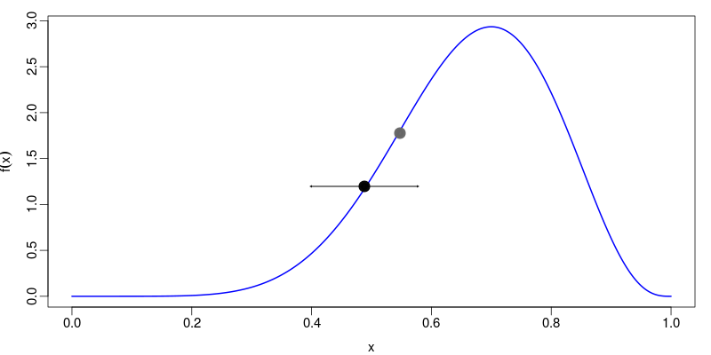
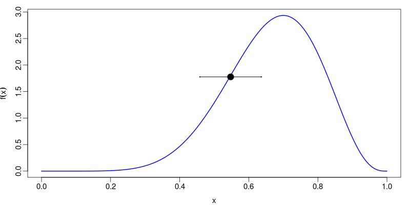
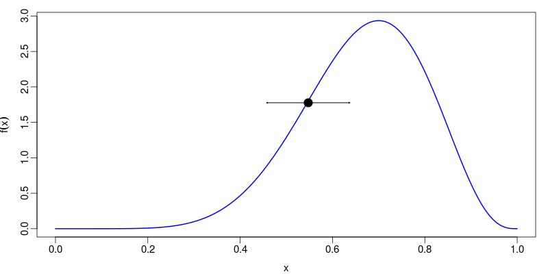

Demographic Inference in BEAST 2 and the Extended Bayesian Skyline Plot
Stadler Group, D-BSSE, ETH Zürich
Cesky Krumlov Workshop on Population and Speciation Genomics
24th January, 2018
24th January, 2018
Why involve genetics?
Genetic samples yield trees: information about events ancestral to samples.Ancestral event times may be informative when sample times aren't.
For propositions $A$ and $B$, the probabiltiy $P(A|B)$ is the degree to which $A$ is believed to be true, on the condition that $B$ is true.
There are only two rules for manipulating probabilities:
That's it! You can now do Bayesian statistics.
Suppose we have a probabilistic model $M$ with parameters $\theta_M$. Given data $D$ which we assume has been generated by the model, what can we learn about the parameters?
Mechanically applying the product rule yields
$$\color{darkred}{P(\theta_M|D,M)} = \frac{\color{yellow}{P(D|M,\theta_M)}\color{darkblue}{P(\theta_M|M)}}{P(D|M)}$$
Terms are named posterior, likelihood and prior.
Bayes' rule gives us a natural framework for drawing on many sources of information:
For probability distributions/densities of a single variable, it is often useful to summarize the uncertainty in the value using an interval. This is the 95% highest posteriod density (HPD) interval:
Interpretation is easy: 95% posterior probability that the truth lies within this interval.
$$\LARGE P(A|T,\mu)$$
$$P(T,\mu,\theta|A) = \frac{1}{P(A)} P(A|T,\mu)P(T|\theta)P(\mu,\theta)$$
Questions
- What is $P(A)$?
- Is the tree prior really a prior?
(I.e. does it depend on the data?)
Because of the way we've factorized the joint probability for the data and model parameters, we are implicitly assuming that our alignment could have been produced in the following fashion:
Separating the process of tree generation from that of sequence evolution implies neutrality.
INTEGRATION
Bayes' theorem has a troublesome denominator: $$ P(\theta_M|D,M)=\frac{P(D|\theta_M,M)P(\theta_M|M)}{P(D|M)} $$
The quantity $P(D|M)$ is a normalizing constant, which is the result of integrating the numerator over all $\theta_M$: $$P(D|M)=\int P(D|\theta_M,M)P(\theta_M|M)d\theta_M$$
In our context, Monte Carlo methods are algorithms which produce random samples of values in order to characterize a probability distribution over those values.
Usually, the algorithms we deal with seek to produce an arbitrary number of independent samples of $\theta_M$ drawn from the posterior distribution $P(\theta_M|D,M)$.
For phylogenetic inference, need to produce a random walk in the space of rooted time trees. A variety of different moves/"operators" are commonly used:
The number of steps required for this function to decay to within the vicinity of 0 is the gap between effectively independent samples, $\tau$.
The ESS is a rough estimate of the number of actual samples a chain has generated.
You should really only consider the order of magnitude of the ESS.
- How can we tell when a phylogenetic MCMC calculation has reached equilibrium?
- How do we know when we've collected enough samples?
BEAST 2 is a free (as in freedom) software package that uses MCMC to perform Bayesian phylogenetic inference.
Project website: beast2.org
Fork/rewrite of BEAST 1.x, which is now a separately-maintained project. (Important to specify BEAST 1 or 2 when asking for help!)

 

 
